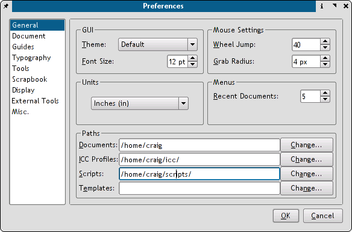
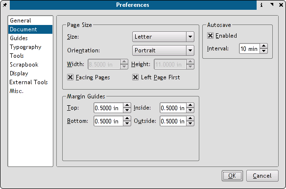
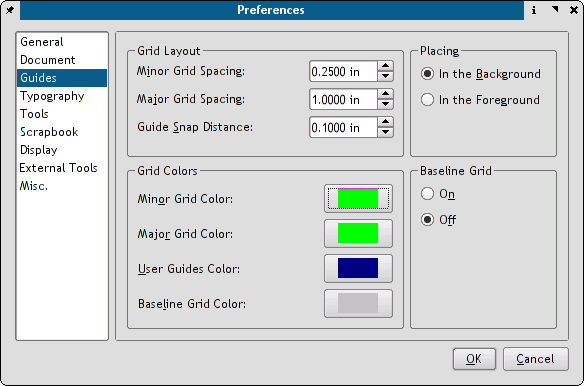
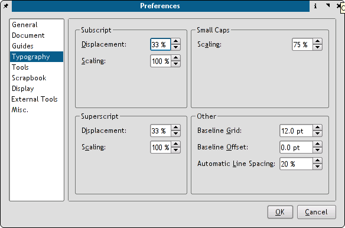
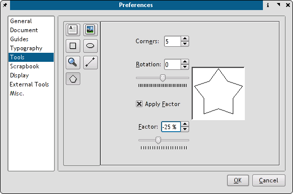

The settings panels are the heart of changing the default behaviors of Scribus and give you considerable flexibility in setting document and program defaults. If you are new to DTP, there are extensive tool tips which can guide you for each setting, as well as the included documentation.
Scribus' preferences are kept in a hidden directory .scribus. Within the directory is a .scribus.rc file and a scribusfont.rc file which preserves your font preferences. This file is stored in XML format, so you can inspect its contents with a text editor. If you have installed the scripter plug-in, there will also be a scripter.rc file which lists most recently used scripts.
You can change the preferences while a document is open and those preferences will remain with the currently open doc. Setting preferences globally for Scribus is done when all documents are closed. Then, any new documents will inherit these preferences.
Within these 9 panels, you can change many of the defaults for Scribus, many of which can be changed or overridden in with a menu or right click context menu on an object while editing or in the measurements palette.
You can change the default theme with Scribus to include themes like Liquid or the new themes based on KDE plug-ins. Scribus will inherit KDE themes and decorations if you have KDE running. If you do not have KDE installed, you can also tune the look of your Qt programs separately with qtconfig from the command line. Simply open a console window and type qtconfig. The configuration panels in Qtconfig are pretty self explanatory. I would advise not increasing the font size above 12 points, as some buttons in Scribus menus might be obscured. In this example, the fonts have been changed to TrueType fonts at 12 points and Scribus is using the default theme inherited from KDE.
|  |
If you have a wheel mouse, one of the nice defaults of Scribus is using this to scroll through a Document. Wheel jump changes the number of lines for each scroll of the mouse wheel. Grab Radius defines how much distance is allowed to select an object. Smaller numbers mean more precise, but sometimes more difficult selection of smaller objects.
These are user selectable paths for your documents, ICC color profiles and python scripts. Changing them is simply clicking on your preferred location. Note: hidden directories are not viewed by default, but can be seen by right clicking the file selector widget and choosing. "Show Hidden".
This panel sets the defaults for paper size, page margins and Auto save options. Auto-save enables Scribus to save your file with a backup file with .sla.bak extension.
|  |
This panel sets the default distances and colors, as well as the snap to settings. Baseline Grids is the set of horizontal guides which forces text in multiple columns to align horizontally, as shown below. Settings for the distances for baselines are in Paragraph Styles, as well as the next panel Typography
|  |
Here you can change options for typographic features including subscript, superscript, automatic line spacing and scaling of small capitals. Disp.: means displacement or difference in distance above/below normal text. Baseline Grids are non-printing grids which align text across multiple columns on the page. Baseline Offset is the distance from the top of the page where the topmost baseline is placed.
|
|  |
In the Tools tab you can change the defaults for many common tasks and tools: font, size and color, text frame defaults, image frame defaults and zoom defaults. Most all of these can be overridden or changed with the the right click context menu or in the Properties Palette when selecting an object.
|  |
You can make stars, triangles and convex polygons with intuitive controls. You can also apply gradient colors to all of these shapes within the measurements panel. This picture above makes a star the default.
With scrapbooks, you can right button drag and drop frequently used items, including pictures, images and text files for quick placement. Scrapbooks can be saved with a file or independently of a document, as a separate scrapbook which can be loaded use with many different Documents. Separate scrapbooks are kept with a .scs designation. This panel sets the defaults for the thumbnail size in the scrapbook palette and if scrapbooks should be saved automatically when changed.
This panel sets the defaults and options for margin colors, frame display, page background and you have the option to display unprintable areas in the selected margin color. You can also enable page side by side or also known in DTP lingo as "reader spreads".
 |
This panel also enables PDF 1.4 (Acrobat 5+) transparency features. The default is disabled. For more info on PDF look at PDF Export Options and PDF/X-3 and Scribus. The Adjust Display Size enables you to adjust the screen sizing in order that 1 inch on the screen actually measures 1 inch. Just take an accurate ruler and place it on the screen and adjust the slider until it matches your ruler.
 |
This panel enables you to change the default settings for the location of Ghostscript and your preferred image editing tool. In the example above, a parallel build of Ghostscript 8.51 has been installed in /usr/local/bin/ for better results with EPS,PS and PDF importing, as well as speedier print-previews. See the hints in Advanced Ghostscript. One other important note, when using the GIMP as your image editor, you must close GIMP completely before, control will return to Scribus.The workaround for this is to use gimp-remote instead. This will then either start a new instance of gimp or use the currently running version of gimp.
You can use other image editors including cinepaint, krita and even Photoshop with wine. With Crossover, you would use (with quotes) in the dialog something like this :
"/opt/cxoffice/bin/wine" --workdir "C://Adobe" --check --cx-app "C:////Adobe////Photoshp.exe"You can copy the exact settings from the desktop shortcut from the menu editor in KDE.